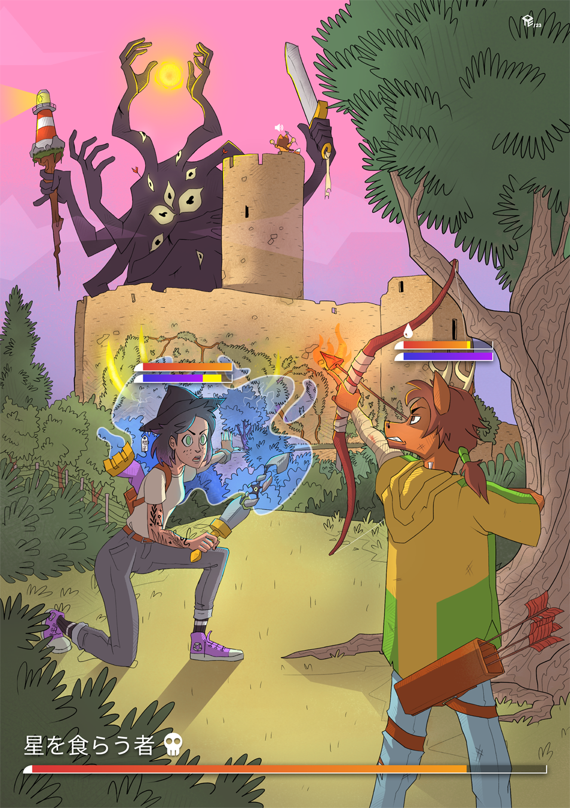
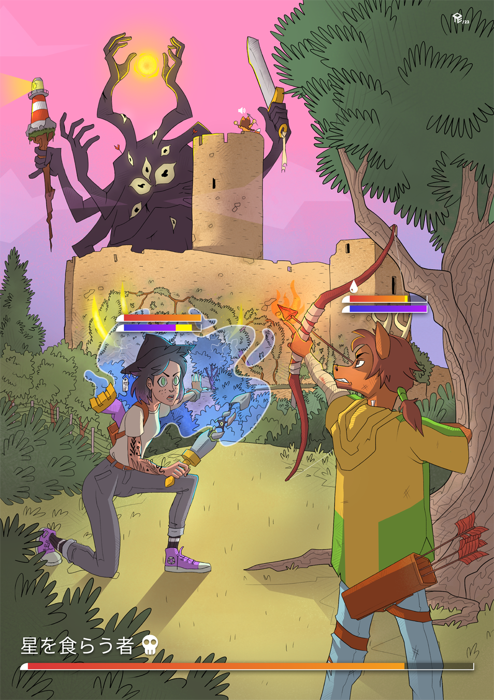

Vacanze liguri is a collection of art works (2D and 3D) made during the summer of 2023 with the memory of early 2000s. The memory of the beautiful ligurian summer landscape is mixed with the infinite sense of time of youngness and the the japanese cartoon and videogames of my childhood.
 


Date of realisation: 2023
Project type: Personal experiments/Concept art
Software used: Clip Studio, Blender, Illustrator
Role: Illustrator, 3D modeling, Sticker design